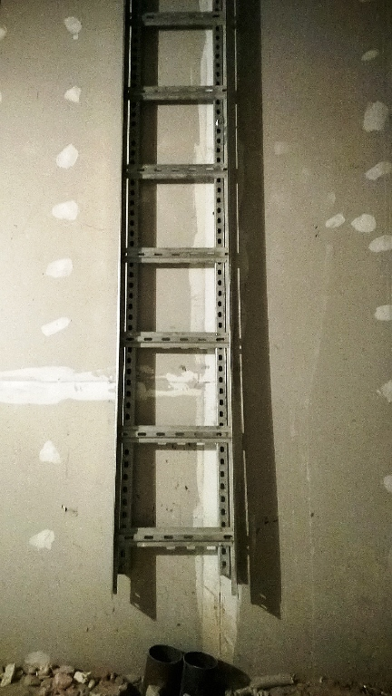
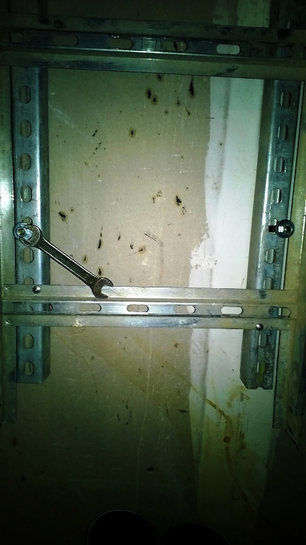
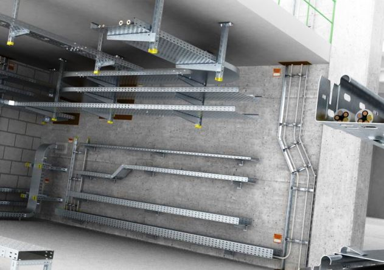

Качественный электромонтаж в Санкт-Петербурге и ленобласти, стаж 12 лет. Частный электрик, недорого и качественно.
Тел. 8 904 642 08 57 Николай.
Николай.

Монтаж металлического лотка для кабелей.
Частный электрик в Санкт-Петербурге и Ленинградской обл..
Эта статья описывает простой монтаж кабельного лотка.

Работа электрика очень разнообразная. От розеток до щитов, но в этой статье хотелось бы поговорить про лоток для кабелей.
Металлический лоток для кабелей – лоток, предназначенный для прокладки кабелей различных марок и сечений, подходит также для слаботочных. Бывает нескольких видов: сетчатый (в основном применяется для прокладки витой пары) и цельный (прокладка электрических, силовых трасс). Имеет по центру разделительную вставку, которую зачастую электрики не используют, так как уменьшает вместимость лотка.

Итак, монтаж лотка. У меня имеет лоток фирмы IEK. Будем производить монтаж через гипсокартон в кирпичную кладку. Для этого сам понадобятся: перфоратор, бур 8мм, порядка 10 анкеров и гаечный ключ на 13, уровень (желательно лазерный), стремянка и напарник.
Сколько стоит монтаж металлического лотка для кабелея?
Длина монтажа кабеля в метрах. |
Цена за монтаж 1 метра лотка в руб. |
До 20 метров. |
От 170 руб. |
40. |
150. |
80. |
130. |
120. |
110. |
150. |
100. |
До 170 метров. |
От 90 руб. |
От 170 метров. |
От 80 руб. |

Первым делом – выставляем лазерный уровень и отбиваем вертикаль (желательно не попасть в профиль гипсокартона). Отбив вертикаль и отчертив карандашом, приступаем к разметке отверстий для анкеров. Анкера делаем – каждый 30см (параметр вариативный, зависит от нагрузки на лоток). Следующий этап – берём перфоратор и пробиваем отверстия для анкеров. Выполнив данное действие, приступаем к непосредственному монтажу лотка. Лоток прикладываем к стене на всю высоту, выставляем его по отчерченной линии вертикали. Дальше – подставляем стремянку и начинаем вставлять анкера через лоток (идём сверху вниз), попутно закручиваем анкера (не перетягивайте, потом больше времени уйдёт на переделку).
Когда все анкера плотно закреплены, можно считать монтаж лотка оконченным, остаётся только начинать заводить кабеля.
 Поменять проводку в квартире.
Сколько будут стоить материалы.
Поменять проводку в квартире.
Сколько будут стоить материалы.
Электрика в загородном доме стоимость работ.

Замена электропроводки в панельном доме.
Расценки на электропроводку квартир.
Замена проводки в хрущевке. Электромонтаж в частном доме. Электрика в загородном доме.
Сколько стоит замена электропроводки в двухкомнатной квартире?.
Электрик в новостройку однокомнатная квартира недорого.

Сколько стоит поменять электропроводку в 3-х комнатной квартире.